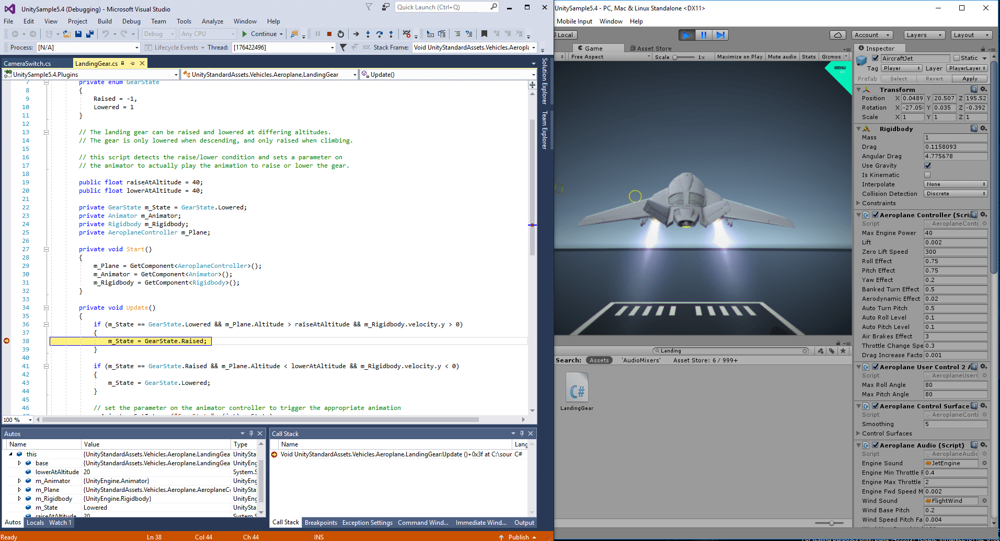

Windows
.NET desktop development
Desktop development with C++

UWP development
.NET desktop development
Build WPF, Windows Forms, and console applications using C#, Visual Basic, and F#.
Description
Create Windows-based applications by using Windows Presentation Foundation or by using Windows Forms. Also create web applications using the .NET Framework, and client applications for computers or devices that you make available through the Microsoft Store.
Development applications
- - .NET desktop development tools
- - .NET Framework 4.x development tools
- - .NET profiling tools
- - C# and Visual Basic language support
- - Entity Framework 6 tools
- - IntelliTrace
- - Just-In-Time debugger
- - Live Unit Testing
- - Live Share
Desktop development with C++
Build classic Windows-based applications using the power of MFC, ATL, and the Microsoft C++ toolset.
Description
A native application that can access the full set of Windows APIs and either runs in a window or in the system console. Desktop applications in C++ can run on Windows XP through Windows 10.
Development applications
- - Visual C++ core desktop features
- - C++ profiling tools
- - Windows 10 SDK
- - CMake C++ tools
- - ATL C++ for x64 and x86
- - Test adapter for Google Test
- - Test adapter for Boost.Test
- - IntelliTrace
- - Just-In-Time debugger
- - Live Share
Universal Windows Platform development
Create applications for the Universal Windows Platform with C#, VB, JavScript, or optionally C++.
Description
Build applications that target Windows Desktop, Windows Phone, Xbox, HoloLens, SurfaceHub, and even Windows 10 IoT.
Development applications

- - Blend for Visual Studio
- - .NET Native and .NET Standard
- - NuGet package manager
- - Universal Windows Platform tools
- - Windows 10 SDK
Web & Cloud
Web development
Azure development
Python development
Node.js development
Data storage and processing
Data science and analytical applications
Office/SharePoint development
ASP.NET and web development
Build web applications using ASP.NET, ASP.NET Core, HTML/JavaScript, and Containers including Docker support.
Description
Maximize your productivity deveoping web applications using ASP.NET, standards-based technologies like HTML, and JavaScript.
Development applications
- - Website using ASP.NET MVC 5
- - Web API using ASP.NET Web API 2
- - Chat application using ASP.NET SignalR 2
- - .NET Framework 4.x development tools
- - .NET Core 2.1 development tools
- - ASP.NET and web development tools
- - .NET profiling tools
- - Container development tools
- - Cloud tools for web development
- - IntelliSense, code navigation, and refactoring for C#
Azure development
Azure SDKs, tools, and projects for developing cloud apps, creating resources, and building Containers including Docker support.
Description
Easily build, test, deploy, and managee scalable apps and services on the Microsoft cloud. Install to view resources in Cloud Explorer, create resources using Azure Resource Manager tools, build applications for Azure Web and Cloud Services, and perform big data operations using Azure Datalake tools.
Development applications
- - Publish an ASP.NET Core app to Azure in the IDE
- - Test performance of a cloud service
- - Debug a published Azure cloud service
- - Azure development prerequisites
- - .NET Framework 4.x development tools
- - .NET Core 2.1 development cools
- - ASP.NET and web development cools
- - Container development cools
Python development
Editing, debugging, interactive development and source control for Python.
Description
Interactive development for Python apps, using familiar frameworks including Django and Flask.
Development applications
- - Python applications
- - Django web apps
- - Flask web apps
- - Support for multiple interpreters
- - Rich editing, IntelliSense, and code comprehension
- - Interactive (REPL) environment window
- - Built-in support for project system
- - Project and item templates to simplify new project creating process
- - Profiling and unit testing tools
Node.js development
Build scalable network applications using Node.js, an asynchronous event-driven JavaScript runtime.
Description
Easily build Node.js and Vue.js projects using built-in templates in Visual Studio.
Development applications
- - Project templates
- - IntelliSense that analyzes your Node.js code
- - npm integration
- - Interactive (REPL) environment window
- - Local and remote advanced debugging
- - Profiling tools to track down performance issues
- - Unit testing support
- - TypeScript integration
Data storage and processing
Connect, develop and test data solutions using SQL Server, Azure Data Lake, Hadoop or Azure ML.
Description
The Data workload enables you to develop across a wide range of relational and big data assets. It provides you the tools to develop queries against databases, data warehouses and data lakes whether on-premises or in Azure. It provides support for SQL, U-SQL, and Hive.
Development applications
- - Use SQL Server Data Tools to design, deploy, and mantain databases
- - Develop U-SQL scripts by using Azure Data Lake Tools
- - Run Hive queries with Hadoop on Azure HDInsight
- - SQL Server Data Tools
- - Azure Data Lake and Stream Analytics Tools
- - .NET Framework 4.x development tools
Data science and analytical applications
Languages and tooling for creating data science applications, including Python and F#.
Description
Use R and Python for wide range of scenarios such as data acquisition, cleaning, model training, deployment, and plotting. Use F#, a powerful functional-first .NET language, for a wide variety of data processing tasks.
Development applications
- - Create visual data plots with R
- - Work with the R interactive (REPL) window
- - Create machine learning models using R and Microsoft ML Server
- - R and Microsoft R Client language support & runtime distributions
- - Python and Anaconda language support & runtime distributions
- - F# with the .NET framework language support & runtime distributions
Office/SharePoint development
Create Office and SharePoint add-ins, SharePoint solutions, and VSTO add-ins using C#, VB, and JavaScript.
Description
Take advantage of various project templates to extend Office and SharePoint. Easily build, debug, and publish your add-ins and solutions from Visual Studio.
Development applications
- - Office add-ins
- - VSTO add-ins
- - SharePoint add-ins
- - SharePoint solutions
- - Office Developer Tools for Visual Studio
- - .NET Framework 4.5 targeting pack
- - .NET Framework 4.x development tools
- - Developer Analytics tools
Mobile & Gaming
Mobile development with .NET
Game development with Unity
Mobile development with C++
Game development with C++
Mobile development with .NET
Build dcross-platform applications for iOS, Android or Windows using Xamarin.
Description
Build fully-native iOS, Android, and Universal Windows Platform apps using a shared C# codebase. With Xamarin technology, every C# developer is a mobile developer, and anything you can do in Objective-C, Swift or Java, you can do in C#.
Development applications
- - Build Android apps using Xamarin.Forms
- - Build iOS apps using Xamarin.Forms
- - Build cross-platform apps using Xamarin.Essentials
- - Xamarin
- - .NET Framework4.x development tools
- - C# and Visual Basic language support
- - .NET Portable Library targeting pack
- - Android SDK setup
- - Google Android Emulator >
Game development with Unity
Create 2D and 3D games with Unity, a powerful cross-platform development environment.
Description
Create games and interactive content and publish to 21 platforms, including all mobile platforms, WebGL, Mac, PC and Linux desktop, web or consoles.
Development applications
- Develop Unity games with premium debugging experience 
- - Visual Studio Tools for Unity
- - C# and Visual Basic
Mobile development with C++
Build cross-platform applications for iOS, Android or Windows using C++.
Description
Create and build native C++ apps for Android and iOS by sharing common code in libraries that can be built for each platform.
Development applications
- - Visual Studio C++ core features
- - Android SDK setup
- - Android NDK
- - Apache Ant
- - C++ Android development tools
Game development with C++
Use the full power of C++ to build professional games powered by DirectX, Unreal, or Cocos2d.
Description
The game development workload with C++ provides you the tools for making games that run on Windows, Xbox, and beyond.
Development applications
- - Xbox live apps
- - UWP game for Microsoft Store
- - UWP apps on HoloLens
- - Visual Studio C++ core features
- - Windows Universal C Runtime
- - C++ profiling tools
- - Windows 10 SDK
- - IntelliTrace
Other Toolsets
Visual Studio extension development
Linux development with C++
.NET Core cross-platform development
Visual Studio extension development
Create add-ons and extensions for Visual Studio, including new commands, code analyzers and tool windows.
Description
Add SDKs and tools you need to create new commands, code analyzers, tool windows and language services using C#, Visual Basic or C++. Then share your extension with the community in the Visual Studio Marketplace.
Development applications
- - Visual Studio SDK
- - Visual Studio extension development prerequisites
- - .NET profiling tools
- - IntelliTrace
Linux development with C++
Create and debug applications running in a Linux environment.
Description
Author C++ code for Linux servers, desktops and devices. You can manage your connections to these machines from within VS. VS will automatically copy and remote build your sources and can launch your application with the debugger. Our project system supports targeting specific architectures, including ARM.
Development applications
- - IoT projects (i.e. Raspberry Pi)
- - Linux console applications
- - OpenGL Linux App
- - Visual Studio C++ core features
- - Windows Universal C Runtime
- - Visual C++ for Linux Development
- - Visual C++ tools for CMake and Linux
.NET Core cross-platform development
Build cross-platform applications using .NET Core, ASP.NET Core, HTML/JavaScript, and Containers including Docker support.
Description
.NET Core is an open-source, general-purpose development platform maintained by Microsoft and the .NET community on GitHub. It's cross-platform (supporting Windows, macOS, and Linux) and can be used to build device, cloud, and IoT application
Development applications
- - Complete .NET Core solution on Windows
- - Docker images for .NET Core applications
- - C# console application using .NET Core
- - .NET Core 2.x developent tools
- - .NET Framework 4.x development tools
- - ASP.NET and web development tools prerequisites
- - Cloud tools for web development
- - .NET profiling tools
- - IntelliTrace
- - Live Unit Testing
- - Live Share